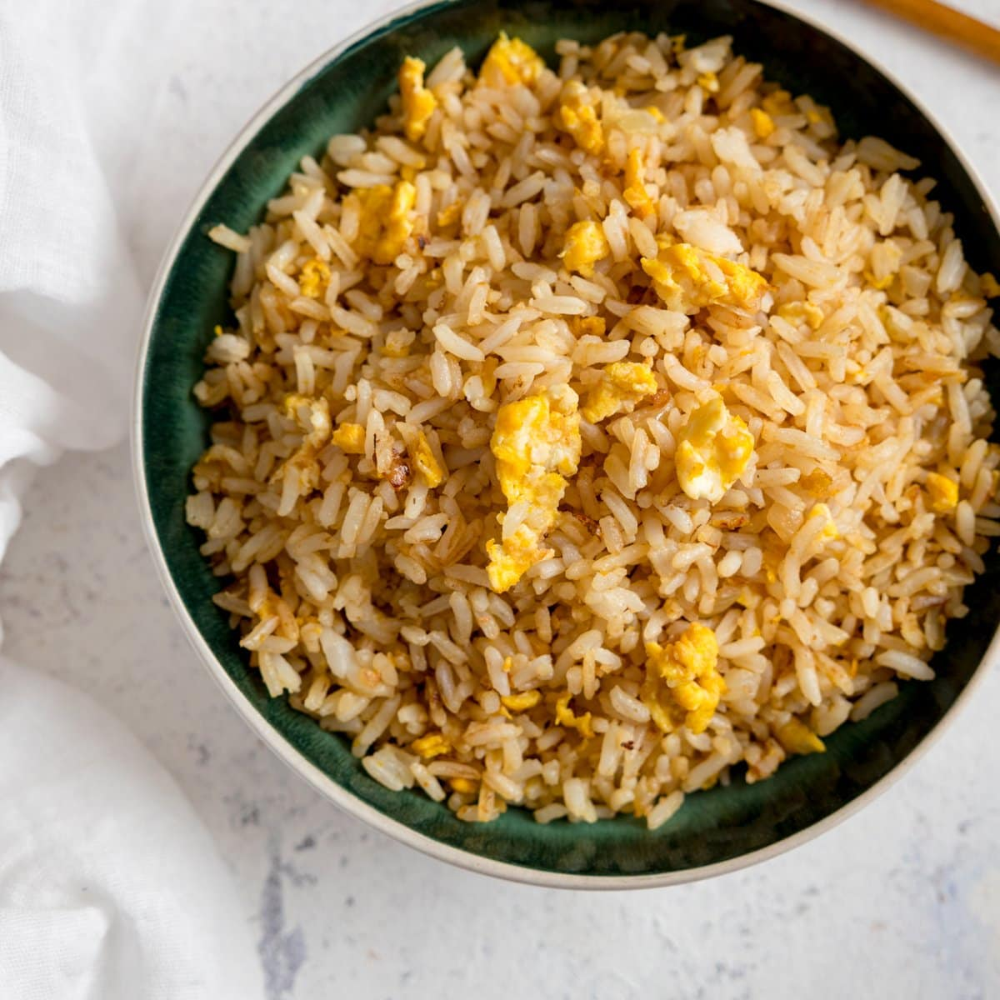

Odin's Egg Fried Rice

Description
Uncle Roger approves.
Egg fried rice is an Asian's comfort food. The base recipe needs only eggs, rice, salt and pepper. This simplicity is what makes it such a versatile dish. You can literally add anything you like, and the end result would still be palatable. (Hopefully)
This is our take, on Egg Fried Rice
Ingredients
- 2 Eggs whisked
- Leftover Rice (Freshly cooked rice works, but leftovers are the best)
- Onions minced
- Garlic smashed (Do not peel)
- Salt and Pepper to taste
- 2 tbsp soy sauce
- spring onions/scallions to taste
- (optional) Any form or protein
- (optional) Any vegetables diced
Steps
- In a hot pan (preferrably a wok) sauté your aromatics. Onions, garlic, and a little bit of the spring onions.
- I found that sautéing your garlic with peel on helps infuse the garlic better into your dish.
- Add a little bit of salt here, it helps the onions cook faster.
- Add in your rice. Heat is your friend with fried rice, so don't be afraid to put your stove on high heat. Keep stirring to prevent burning.
- You should be able to see your rice 'dancing' as the water inside gets heated. Keep tossing your rice till you get a slight color change.
- If you want to have scrispy bits, flattern your rice on the wok and leave for a minute or so. This leaves a thin crust on your rice.
- Add in your soy sauce. Sprinkle the soy sauce around the edge of the pan. This helps infuse a charry soy sauce flavor into your egg fried rice.
- Add your eggs in small batches, then stir. This helps coat individual rice grains instead of having clumps of egg. This method, produces fluffier egg fried rice.
- Taste. Adjust with salt and pepper.
- Turn off the heat and add in the spring onions/scallions
- (optional) Add in your cooked proteins and vegetables and stir.